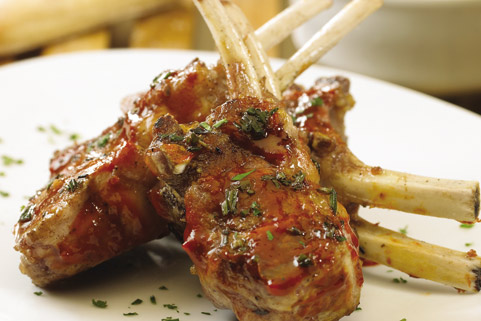

Costillar de cordero
a la salvia, en reducción de vino tinto con base de cebolla y ajo
De la enorme estepa desértica a los frondosos bosques centenarios bañados con lagos de origen glaciar. De la interminable costa oceánica, límite natural del desierto, a esa línea longitudinal que tiene a los Andes como testigos. Interminable a la vista e inabarcable para el resto de los sentidos, llegar hasta esta región, supone alcanzar ese destino deseado por cualquier viajero que se precie. Sus sabores por supuesto están a la altura de lo que regala el paisaje.
a la salvia, en reducción de vino tinto con base de cebolla y ajo
con vegetales al limón y pimienta negra

con frutos de Calafate y salsa de frutos rojos y hojas de menta
acompañada con quinoa, vegetales salteados y carotes asados
Desgrasar parcialmente el costillar y separar la carne de los huesos conservando la estructura. Salpimentar, colocar en una asadera, agregar las cebollas cortadas en cubos, el vino y el agua. Cocinar durante 20 minutos en horno caliente.
Entretanto, picar el perejil y la salvia. Licuar ambas hierbas con el pan rallado, las almendras, los huevos, el queso y los dientes de ajo.
Retirar el costillar del horno. Cubrirlo con la preparación anterior y terminar la cocción en horno fuerte.
Reservar la carne en lugar caliente. Agregar agua a la asadera y unas hojas de salvia. Reducir el fondo de cocción raspando bien las adherencias. Agregar ese jugo a la carne.
Para comenzar debes exprimir los limones y separar el zumo para 3 cosas; primero para el aderezo del timbal, para el dressing del plato completo y para escabechar el puerro.
Escabeche de Puerro: Mezclar el zumo del limón en parte iguales junto al vinagre de manzana, añadir pimienta, sal y el puerro previamente picado, dejar reposar unas 3 horas antes.
Crocantes de zanahoria: Luego de lavar y pelar las zanahorias con un pelador cortar a lo largo trozos delgados y de estructura completa para luego meterlo al horno en una bandeja hasta que se doren y queden crocantes.
Dressing: Mezclar el limón, el aceite de oliva, el merkén, sal y pimienta para luego vestir nuestros plato.
Timbal: En un bowl incorporar el yogurt, el quedo crema y el limón hasta conseguir una mezcla homogénea; a continuación añadir la Centolla.
En un plato montamos la centolla dentro de un pocillo para luego retirar y que mantenga esa forma, recuerda escurrir el líquido de ésta antes de montar, de lo contrario es probable que se desarme nuestros timbal.
Luego de retirar el pocillo, decorar con la palta fileteada alrededor, a un castado montar el puerro escabechado y los crocantes de zanahoria, añadir el dressing a gusto y ¡disfrutar!
Calentar la crema con la mitad de la leche y el azúcar hasta disolverla.
Agregar la rayadura de naranja para perfumar.
Mezclar las yemas con el resto de la leche.
Unir ambas preparaciones y hornear a baño María en cuencos individuales por 20/30 minutos a 150 grados o hasta que coagule la crema.
Servir con mermelada o salsa de calafate o una bocha de helado de calafate o frutos rojos.
Cortar la carne en trozos, meterla a la olla junto con la cebolla cortada en juliana. Echar el aceite de oliva y dejar dorar unos minutos. Posteriormente, mezclar con el perejil y sazonar con todas las especias. Poner a fuego lento con el vino durante 10 minutos.
Añadir a la olla agua y echar las verduras; las zanahorias cortadas en rodajas, las papas y los nabos pelados y cortados en cubos, los pimientos cortados en tiras, las berenjenas y los carotes cortados en rodajas. Finalmente, echar el concentrado de tomate.
Cocinar a fuego lento, durante dos horas. Paralelamente, en otra olla con agua y sin sal, hacer cocer la quinua real; ésta debe terminar su cocción suelta.
Una vez terminada la preparación, servir la quinua real con una buena porción de carne jugosa y acompañada de las verduras.